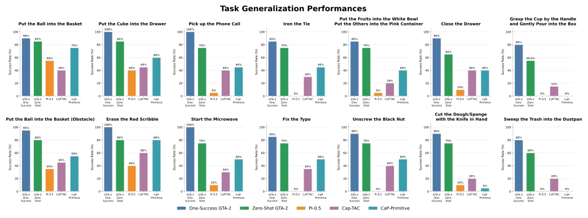
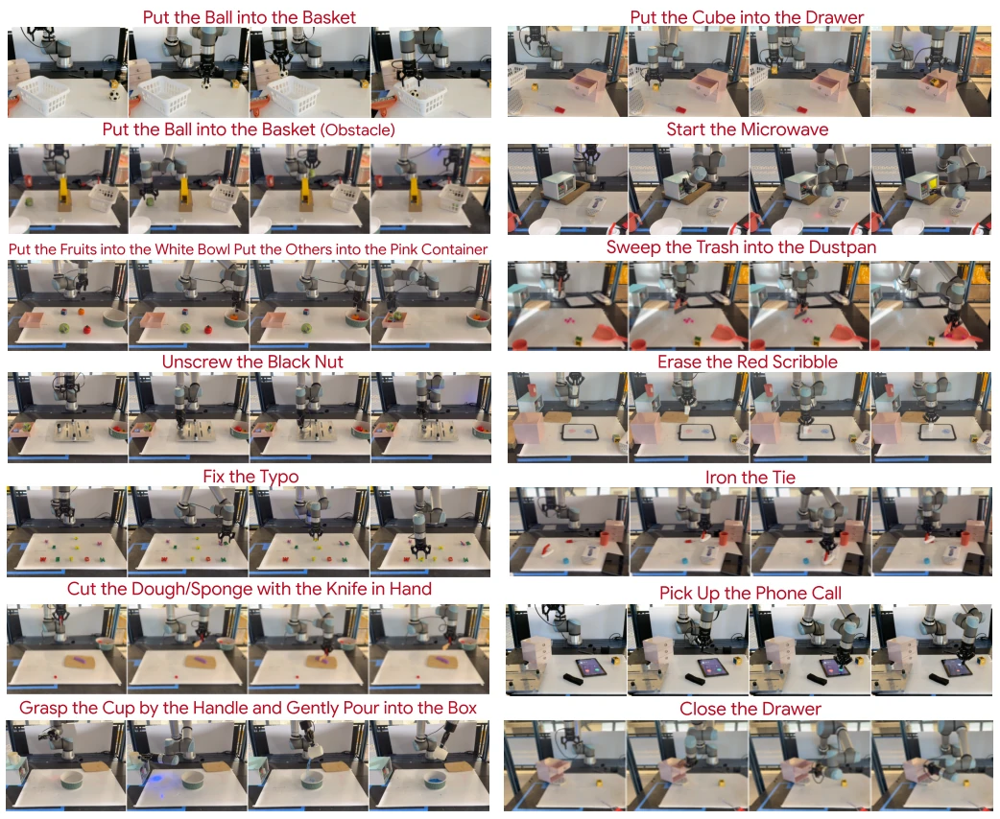

Fig. 1: GTA-2 turns task instructions into reusable, scene-grounded manipulation skills. (Left) GTA-2 identifies task- relevant object keypoints and axes, and composes parameterized controllers to construct executable skills, illustrated for erasing and pouring. (Right) Across new scene configurations, the controller composition remains fixed while object features and execution parameters are re-grounded for the current observation.
Fig. 2: Overview of GTA-2. GTA-2 takes a task prompt, scene image, and controller library as inputs. Specialized agents process these inputs to decompose the task, generate abstract skill recipes, set task-specific parameters, and produce 3D visual groundings. These outputs are combined into an executable robot script. Human feedback provides a refinement loop for updating the subtasks, parameters, or groundings when needed.
Fig. 4: Zero-shot plan-generation performance and feedback-based recovery of GTA-2 across 14 manipulation tasks. Each task is evaluated over 15 independent runs. Green segments indicate successful executions, while the remaining segments denote runs requiring feedback at that stage and are colored by the module receiving feedback.

Fig. 5: Task-generalization performance of GTA-2 and the evaluated baselines across 14 manipulation tasks. Bars report success rates for GTA-2 under the One-Success and Zero-Shot settings, together with Pi-0.5, CaP-TAC, and CaP-Primitive. All results are presented on a common 0–100% scale and evaluated over 20 runs. Values above the bars show the corresponding success rates.
其他图片Other Figures

Fig. 3: Representative real-robot executions across the 14 manipulation tasks used in our evaluation. Each example shows key aspects of the task diversity handled by GTA-2, including pick-and-place, articulated-object interaction, tool use, contact-rich manipulation, and constrained motion.